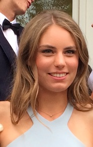

I am
- a CS Major at UPenn
- a Teacher & Mentor for Girls Who Code West-Philly
- a Web Developer for UPenn Outdoors Club
- a foodie and outside whenever possible!
Projects
- This website! My website is an exploration in HTML, CSS and JavaScript and showcases what I have learned teaching myself, using resources like online courses from codecademy and w3schools as well as YouTube videos and just googling things I'm interested in. I started making this website on February 26th!
- My FemmeHacks project that won the Microsoft: Most Inclusive Design Award: PharmaSafe: a website enabling users to sign up for informational reminders to take their medications
- The UPenn Outdoors Club location recommendation website: a website I'm working on in a team of three to enable members to recommend places like hiking trails, campsites, restaurants, and vista points and view these points of interest on a map to allow for easy trip planning and trip documentation
- Memory Match: a game I created in Java using the JavaSwing library for the GUI that I made as my final project for CIS-120: Programming Languages and Techniques
- Flappy Fieldman: after self-teaching myself Objective C, I made an iOS app with a friend to honor our favorite teacher and game (Flappy Bird)